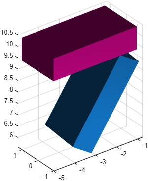

Spring
Class phx.Spring | Superclass: phx.base.Object
phx.Spring is a combined element consisting of an ideal spring and
an ideal damper in parallel, connecting two bodies between local connection points. The force
follows F = Stiffness·(length - FreeLength) + Damping·velocity
and acts along the line joining the two points. The spring can be colored by its force magnitude.
spring = phx.Spring(bodyA,bodyB) creates a spring between two bodies
attached at their origins. Use PointA and
PointB for custom connection points.
| Argument | Type | Description |
|---|---|---|
| bodyA, bodyB | phx.Body (scalar) | The two bodies the spring connects. |
| Property | Type / Default | Description |
|---|---|---|
| PointA | [0 0 0] | Connection point in the local space of body A. |
| PointB | [0 0 0] | Connection point in the local space of body B. |
| FreeLength | 0 | Unstretched length of the spring, m. |
| Stiffness | 20 | Spring stiffness, N/m. |
| Damping | 0 | Damping coefficient, N·s/m. |
| Colormap | "none" | Name of the colormap used to color the spring by force. |
| ColorRange | [0 100] | Force range mapped across the whole colormap, N. |
| Overlay | false | Draw the spring as an overlay (always on top). |
| Force | 1×3 double (read-only) | Current spring force vector, N. |
| Length | double (read-only) | Current extension beyond FreeLength, m. |
| Energy | double (read-only) | Elastic energy stored in the spring, J (dependent). |
| Function | Description |
|---|---|
| showCharacteristic | Plot the force–travel characteristic of the spring at one or more velocity multiples. |
clf; view(3); axis equal; grid on; camlight headlight; a = phx.Body("Type", "static", "Position", [-3 0 10], "Shape", {"Box", "Size", [4 2 1]}); b = phx.Body("Position", [3 0 10], "Shape", {"Box", "Size", [4 2 1]}); phx.Spring(a, b, "Stiffness", 3e5, "Damping", 2e3, ... "PointA", [2 0 0], "PointB", [-2 0 0], ... "Colormap", "jet", "ColorRange", [0 2e6]); sim = phx.Simulation; sim.step(5, 500, 5);

s = phx.Spring(a, b, "Stiffness", 1e4, "Damping", 50); s.showCharacteristic(0.2, [0 1 10]); % +-0.2 m travel, 3 velocity multiples